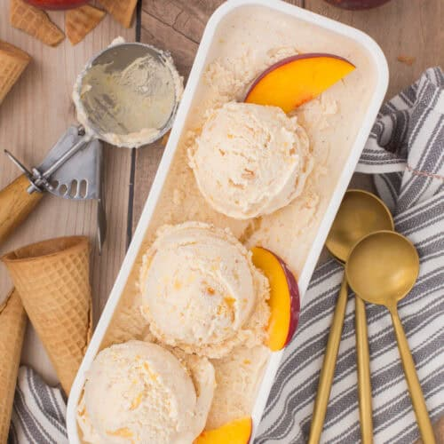

Peach Cobbler Ice Cream
Ingredients
Peach Cobbler Topping
- 1/2 cup all-purpose flour
- 1/2 tsp granulated sugar
- 1/2 tsp light brown sugar
- 1/4 tsp sea salt
- 3 Tbs salted butter (softened)
- 1 Tbs whole milk
Peach Cobbler Filling
- 3 cups peaches sliced & peeled (fresh or canned)
- 1/3 cup granulated sugar
- 1/4 tsp sea salt
- 1/2 Tbs corn starch
- 3/4 tsp ground cinnamon
- 2 Tbs salted butter
Ice Cream
- 3 cups heavy cream
- 1 cup peach cobbler filling (no topping)
- 1 1/2 cups whole milk
- 3/4 cup granulated sugar
- 1 1/2 Tbs vanilla extract
- 1 tsp sea salt
- 1/4 tsp ground cinnamon
- 1 cup peach cobbler (chilled and diced)
Instructions
Peach Cobbler